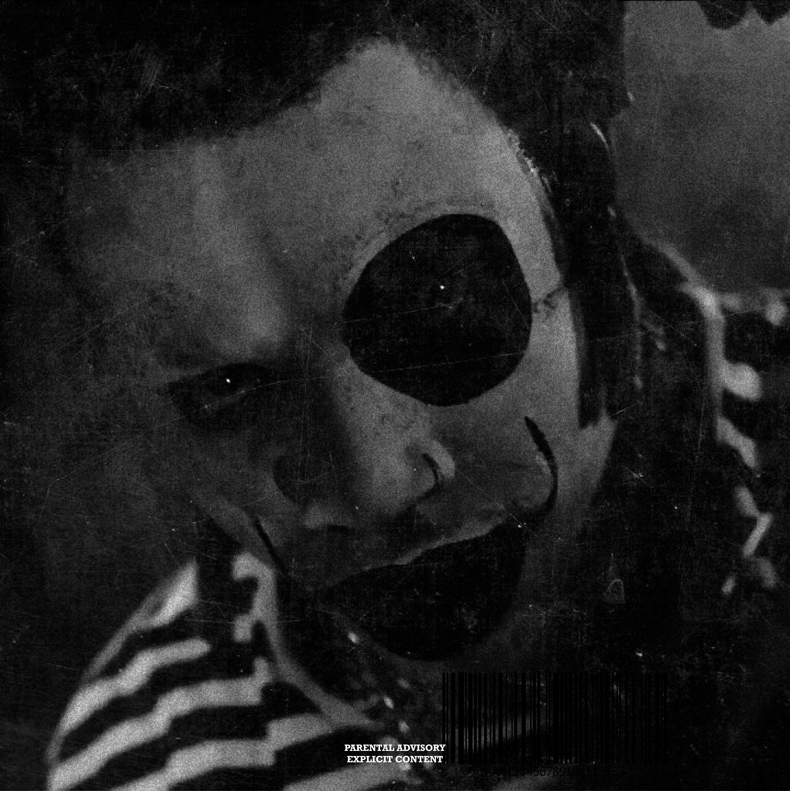
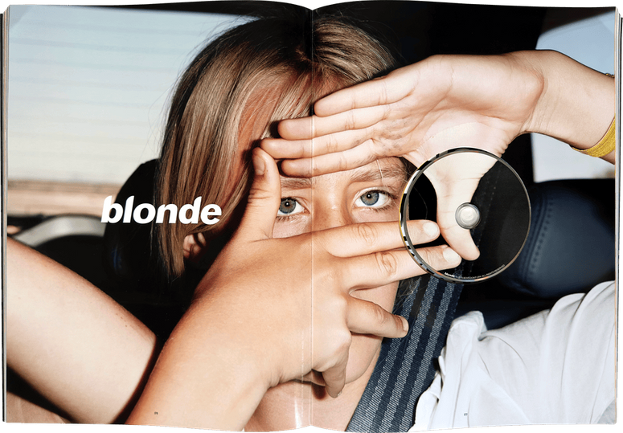

ACT 3: Dark

TA13OO is a concept album divided into three acts—"Light," "Gray," and "Dark"—each exploring different themes.
"If you could see my thoughts, you would see our faces"
"You ain't a kid no more, we'll never be those kids again"
My favorite album. Every year, I return to it for a few months. A truly timeless album with introspective storytelling. Frank Ocean pulled off a masterful stunt by first releasing Endless, a visual album that fulfilled his Def Jam contract, only to drop Blonde independently the very next day—maximizing his creative control and financial gain while stunning the music industry.

favorite songs: Nikes, White Ferrari, Futura Free
"When everyone you thought you knew
Deserts your fight, I'll go with you
You're facin' down a dark hall
I'll grab my light And go with you"

The best twenty one pilots album.
With lore that is too complex to explain.
Playboi Carti rarely releases music, it's as if he does it on purpose, making it special when his music drops. He promised that I AM MUSIC would be released in 2024, but that didn't happen. Carti's strong influence and unique sound started with Whole Lotta Red, and with creating Opium.
Every song on Hi This is Flume transitions into the next one.
Flume also made a 43 minute visualizer for his mixtape. Which you can see with 17 timestamped links on the right side.
This album is a big turn in Kanye's career. This was caused by the loss of his mother, and the end of his engagement. It ended up redefining hip-hop and influencing an entire generation of artists.
Notch initially composed some simple tracks but later handed over full responsibility to C418, who crafted Minecraft’s iconic ambient soundtrack.

TA13OO is a concept album divided into three acts—"Light," "Gray," and "Dark"—each exploring different themes.